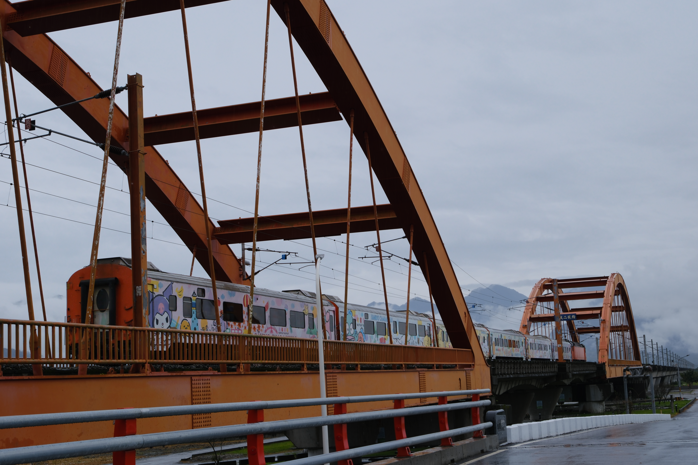

Taiwan's east coast is separated from the west by the Central Mountain Range — a spine of peaks rising above 3,900 metres — and from the Pacific by a narrow strip of coastal cliffs and lowland. Between them, pressed into the space where two tectonic plates still actively collide, lies the East Rift Valley: 160 kilometres of paddy fields, indigenous communities, fruit orchards, and roads so quiet that cycling them feels like having a country to yourself.

The standard route runs 200 kilometres from Hualien to Taitung, with most cyclists completing it in three days — though four is far better. The valley offers two parallel choices: Provincial Highway 9, wider and flatter but carrying more traffic; and County Highway 193, which most cyclists who've done both will tell you is the one that matters. Highway 193 is narrower, quieter, and runs along the base of the Coastal Mountain Range's western face. Once you turn onto it from Hualien, you have the road almost entirely to yourself.
Rent your bike from Giant near Hualien Station — they've perfected the one-way rental, with a twin store in Taitung that accepts the bike back. You don't transport anything. The bike comes with panniers, a computer, lights, a pump, and a lock. For most of the 193 route, the road surface is good enough for a flat-bar road bike; e-bikes are available if you want assistance on the climbs toward Shoufeng or the crossing to the coast.
"County Road 193 is the kind of road you dream about finding — quiet enough to hear the irrigation water running through channels alongside you, with the Central Mountain Range filling the entire western horizon in cloud and green."


The valley's character changes as you move south. The northern section, from Hualien through Ruisui, is broader and more agricultural — the famous Liyu Lake sits just outside Hualien at the base of the Central Mountains, a calm expanse surrounded by forested hills that makes an excellent warm-up ride on your first morning. The central section, through Guangfu and Fuyuan National Forest, passes through Amis indigenous communities; the Fuyuan area is famous for its hotspring guesthouses.
The southern section contains the valley's most celebrated stretch: Chishang, where Taiwan's finest rice has been grown for centuries (the Emperor of Japan is said to have prized it). The Brown Boulevard — a tree-lined avenue running through the paddy fields between Chishang and the coastal mountains — is the kind of cycling road that ends up on postcards. In late October, when the rice is harvested and the fields turn gold before replanting, the light in the afternoon is extraordinary.
From the valley, a road climbs east over the Coastal Mountain Range and descends to the Pacific. The crossing adds elevation — about 200 metres of climbing — but deposits you on Highway 11, one of Taiwan's great coastal roads, where you ride along sea cliffs above the open Pacific. Some cyclists do the entire route this way: valley south to Chenggong, cross the mountains, then coast back north. The best of both.

The valley's accommodation is part of the experience. Farm stays (minshuku) — family-run guesthouses, often attached to working farms — are scattered along the route and are far more interesting than the chain hotels in the larger towns. Book these in advance; they're small, often only have a handful of rooms, and the good ones fill up. The host will typically prepare a meal using produce from their own land. Staying at a farmstay in the Chishang area — with the paddy fields literally outside your window and the sound of irrigation channels at night — is worth planning around.
If you want to extend the journey, both Hualien and Taitung are excellent cities to spend a day in. Hualien is the gateway to Taroko Gorge — an extraordinary marble gorge that deserves a dedicated half-day at minimum. Taitung is a relaxed coastal city with a slower pace and good food; it's also the departure point for ferries to Lyudao (Green Island) and Lanyu (Orchid Island), both worth adding to a longer east Taiwan itinerary.
"Start Taroko early — very early. The gorge is extraordinary before 8 AM, when the light comes sideways through the marble walls and the tourist buses haven't yet arrived. After 10 AM it's still spectacular, but you're sharing it with everyone."


October through November is the cycling sweet spot: the summer heat has broken, the typhoon season is largely over, and the rice harvest in the valley creates a brief golden window where the paddy fields are luminous before planting begins again. The Taitung Hot Air Balloon Festival runs in July and draws international visitors; if you're cycling then, start before 7 AM to avoid the day's heat and afternoon thunderstorms.
Winter (December–February) sees the valley less crowded and more affordable, but also more prone to northeast monsoon winds on the coast road. Spring brings the valley green and beautiful, though rain is a possibility any time on Taiwan's east side. In all seasons, starting each day's ride by 7–8 AM means you finish before the afternoon heat or rain.